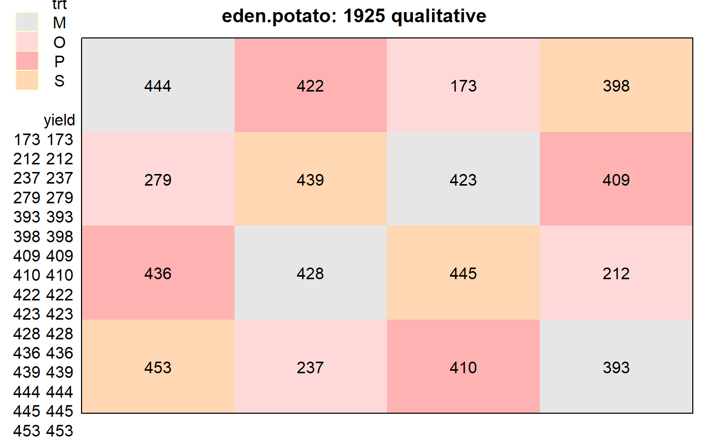
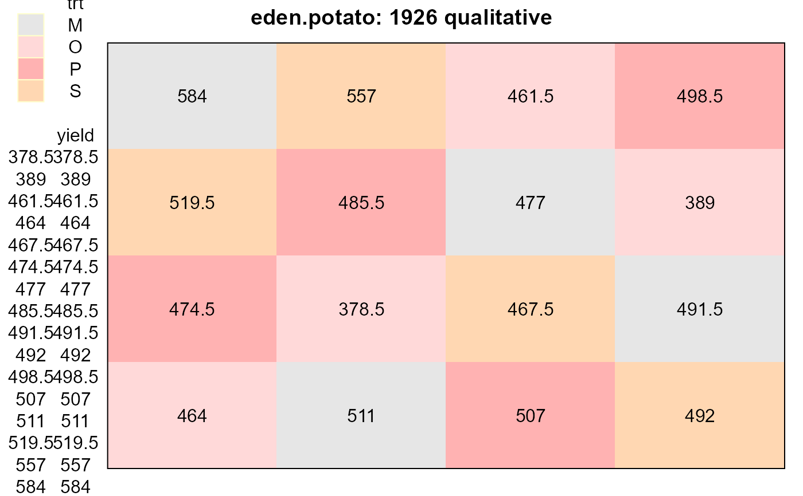
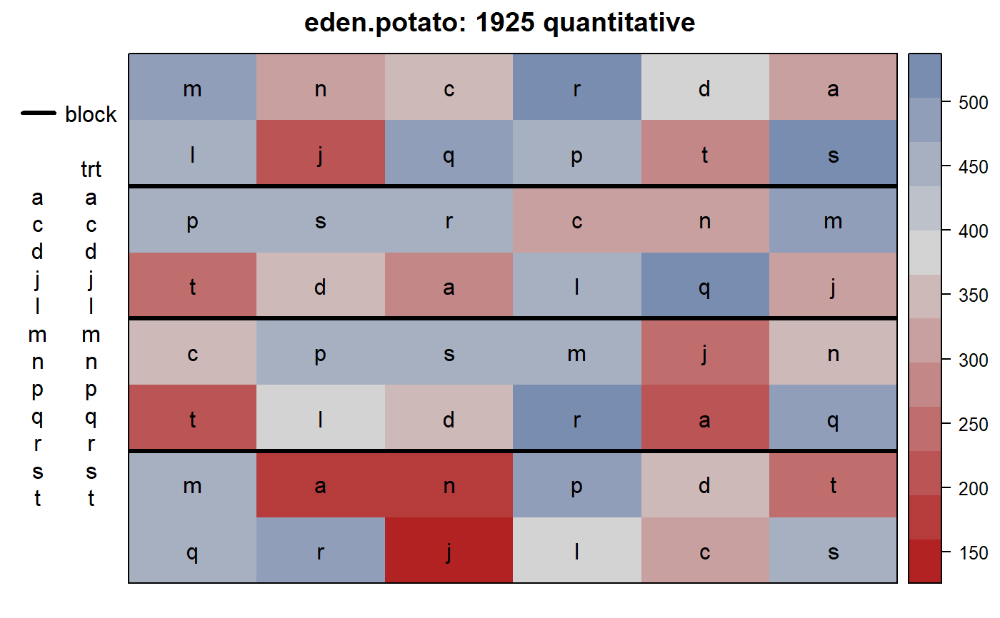
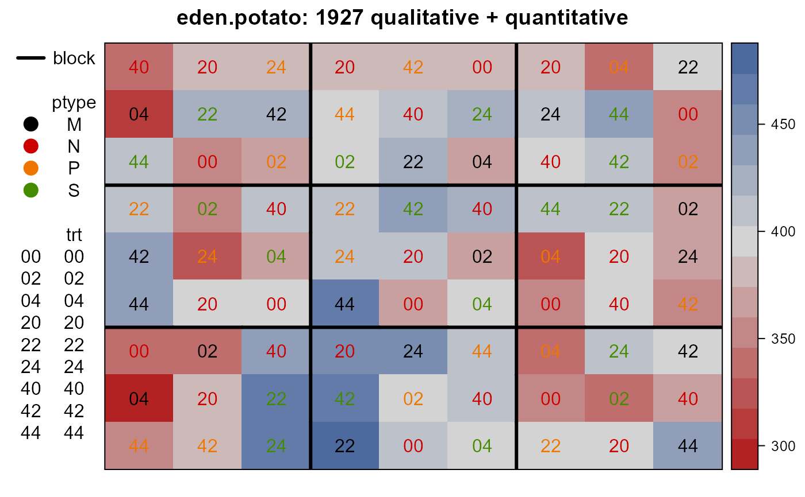

Potato yields in response to potash and nitrogen fertilizer
eden.potato.RdPotato yields in response to potash and nitrogen fertilizer. Data from Fisher's 1929 paper Studies in Crop Variation 6. A different design was used each year.
Format
A data frame with 225 observations on the following 9 variables.
yearyear/type factor
yieldyield, pounds per plot
blockblock
rowrow
colcolumn
trttreatment factor
nitronitrogen fertilizer, cwt/acre
potashpotash fertilizer, cwt/acre
ptypepotash type
Details
The data is of interest to show the gradual development of experimental designs in agriculture.
In 1925/1926 the potato variety was Kerr's Pink. In 1927 Arran Comrade.
In the 1925a/1926a qualitative experiments, the treatments are O=None, S=Sulfate, M=Muriate, P=Potash manure salts. The design was a Latin Square.
The 1925/1926b/1927 experiments were RCB designs with treatment codes defining the amount and type of fertilizer used. Note: the 't' treatment was not defined in the original paper.
Source
T Eden and R A Fisher, 1929. Studies in Crop Variation. VI. Experiments on the response of the potato to potash and nitrogen. Journal of Agricultural Science, 19: 201-213.
References
McCullagh, P. and Clifford, D., (2006). Evidence for conformal invariance of crop yields, Proceedings of the Royal Society A: Mathematical, Physical and Engineering Science, 462, 2119--2143. http://doi.org/10.1098/rspa.2006.1667
Examples
library(agridat) data(eden.potato) dat <- eden.potato # 1925 qualitative d5a <- subset(dat, year=='1925a') libs(desplot) desplot(trt~col*row, d5a, text=yield, cex=1, shorten='no', # aspect unknown main="eden.potato: 1925 qualitative")#> Analysis of Variance Table #> #> Response: yield #> Df Sum Sq Mean Sq F value Pr(>F) #> trt 3 120175 40058 120.4532 9.472e-06 *** #> factor(row) 3 1740 580 1.7437 0.25729 #> factor(col) 3 5841 1947 5.8547 0.03247 * #> Residuals 6 1995 333 #> --- #> Signif. codes: 0 '***' 0.001 '**' 0.01 '*' 0.05 '.' 0.1 ' ' 1# 1926 qualitative d6a <- subset(dat, year=='1926a') libs(desplot) desplot(trt~col*row, d6a, text=yield, cex=1, shorten='no', # aspect unknown main="eden.potato: 1926 qualitative")#> Analysis of Variance Table #> #> Response: yield #> Df Sum Sq Mean Sq F value Pr(>F) #> trt 3 21531.6 7177.2 20.8577 0.001416 ** #> factor(row) 3 12055.3 4018.4 11.6779 0.006452 ** #> factor(col) 3 3989.2 1329.7 3.8644 0.074784 . #> Residuals 6 2064.6 344.1 #> --- #> Signif. codes: 0 '***' 0.001 '**' 0.01 '*' 0.05 '.' 0.1 ' ' 1# 1925 quantitative d5 <- subset(dat, year=='1925b') libs(desplot) desplot(yield ~ col*row, d5, out1=block, text=trt, cex=1, # aspect unknown main="eden.potato: 1925 quantitative")# Trt 't' not defined, seems to be the same as 'a' libs(lattice) dotplot(trt~yield|block, d5, # aspect unknown main="eden.potato: 1925 quantitative")#> Analysis of Variance Table #> #> Response: yield #> Df Sum Sq Mean Sq F value Pr(>F) #> trt 11 464251 42205 40.623 5.534e-16 *** #> block 3 22030 7343 7.068 0.0008496 *** #> Residuals 33 34285 1039 #> --- #> Signif. codes: 0 '***' 0.001 '**' 0.01 '*' 0.05 '.' 0.1 ' ' 1# 1926 quantitative d6 <- subset(dat, year=='1926b') libs(desplot) desplot(yield ~ col*row, d6, out1=block, text=trt, cex=1, # aspect unknown main="eden.potato: 1926 quantitative")#> Analysis of Variance Table #> #> Response: yield #> Df Sum Sq Mean Sq F value Pr(>F) #> trt 15 261497 17433.2 8.0575 2.243e-08 *** #> block 3 11303 3767.7 1.7414 0.1721 #> Residuals 45 97361 2163.6 #> --- #> Signif. codes: 0 '***' 0.001 '**' 0.01 '*' 0.05 '.' 0.1 ' ' 1# 1927 qualitative + quantitative d7 <- droplevels(subset(dat, year==1927)) libs(desplot) desplot(yield ~ col*row, d7, out1=block, text=trt, cex=1, col=ptype, # aspect unknown main="eden.potato: 1927 qualitative + quantitative")#> Analysis of Variance Table #> #> Response: yield #> Df Sum Sq Mean Sq F value Pr(>F) #> trt 8 49929 6241.1 11.4674 1.048e-09 *** #> block 8 22721 2840.2 5.2185 5.708e-05 *** #> ptype 2 14461 7230.5 13.2853 1.673e-05 *** #> ptype:potash 2 1007 503.5 0.9251 0.4021 #> Residuals 60 32655 544.2 #> --- #> Signif. codes: 0 '***' 0.001 '**' 0.01 '*' 0.05 '.' 0.1 ' ' 1libs(reshape2) me7 <- melt(d7, measure.vars='yield') acast(me7, potash~nitro, fun=mean) * 40/2240 # English ton = 2240 pounds#> 0 2 4 #> 0 6.544643 7.060516 7.157738 #> 2 6.513889 7.531746 7.357143 #> 4 6.193452 7.215278 7.435516acast(me7, potash~ptype, fun=mean) * 40/2240#> M N P S #> 0 NaN 6.920966 NaN NaN #> 2 7.163690 NaN 6.856151 7.382937 #> 4 7.037698 NaN 6.458333 7.348214